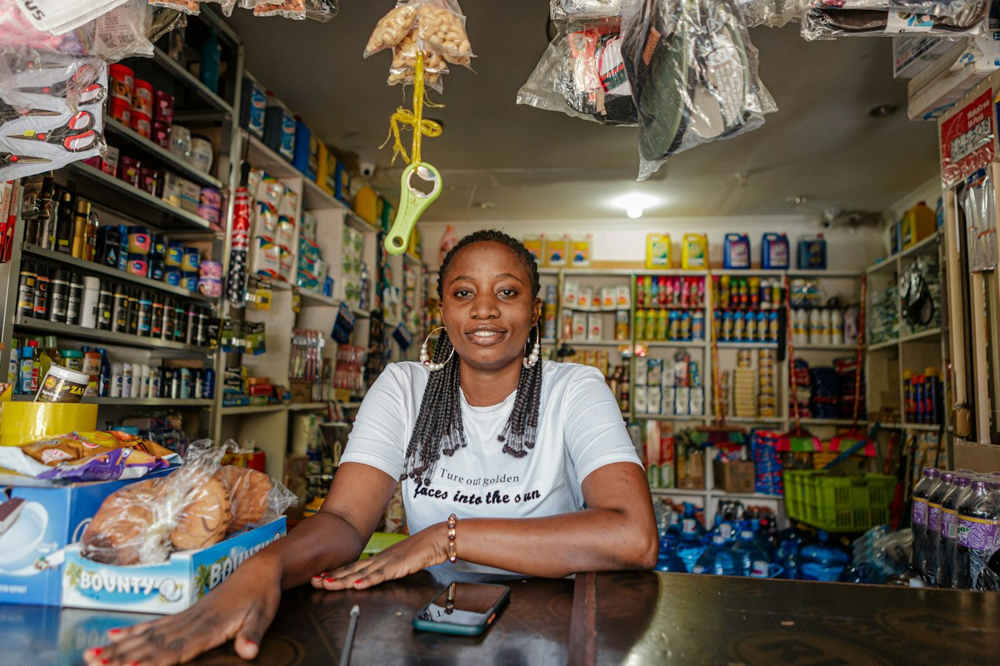

LES PROJETS PRENNENT VIE
AU COMPTOIR. SUR LE TERRAIN. DANS LA VIE.Vos idées méritent
Paiement par carte · vidéo d’illustrationUne idée, une activité, un projet de vie. Avec Crédix, préparez votre financement et comprenez ce que votre dossier raconte.
Particuliers & entreprises · Pensé pour le Burkina FasoDes calculs expliqués. Des hypothèses visibles. Des décisions qui restent humaines.
Crédix vous aide à organiser vos informations et à examiner votre capacité de remboursement. Chaque étape a son rôle.
Rassemblez vos informations, vos revenus ou les flux de votre activité, votre demande et les pièces utiles.
Budget, échéances, trésorerie : les calculs s’appuient sur les données du dossier. Les informations manquantes restent visibles.
Comparez les simulations disponibles et les suggestions. Une hypothèse n’est jamais présentée comme une promesse.
Un ménage et une entreprise ne fonctionnent pas de la même façon. Crédix garde leurs analyses distinctes.
Revenus, dépenses essentielles, dettes et réserve : comprendre ce qui reste disponible après le crédit.
Découvrir mon parcours
Encaissements, charges et échéances : analyser la capacité de l’activité à financer son fonctionnement et sa dette.
Explorer le parcours PMEUne pièce lisible n’est pas automatiquement authentifiée. Une analyse n’est pas un accord bancaire. Crédix distingue les calculs, la revue humaine et la décision du prêteur.
Les données documentaires extraites doivent être contrôlées avant leur utilisation financière.
En visiteur, vous découvrez l’interface. La consultation des dossiers et des documents privés exige une authentification et les autorisations nécessaires.
Explorez l’effet des hypothèses disponibles sans modifier les données du dossier d’origine.
La décision de financement appartient au prêteur. Aucune visite ni analyse ne vaut accord de crédit.